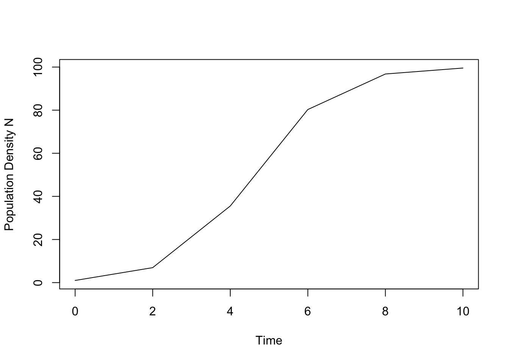
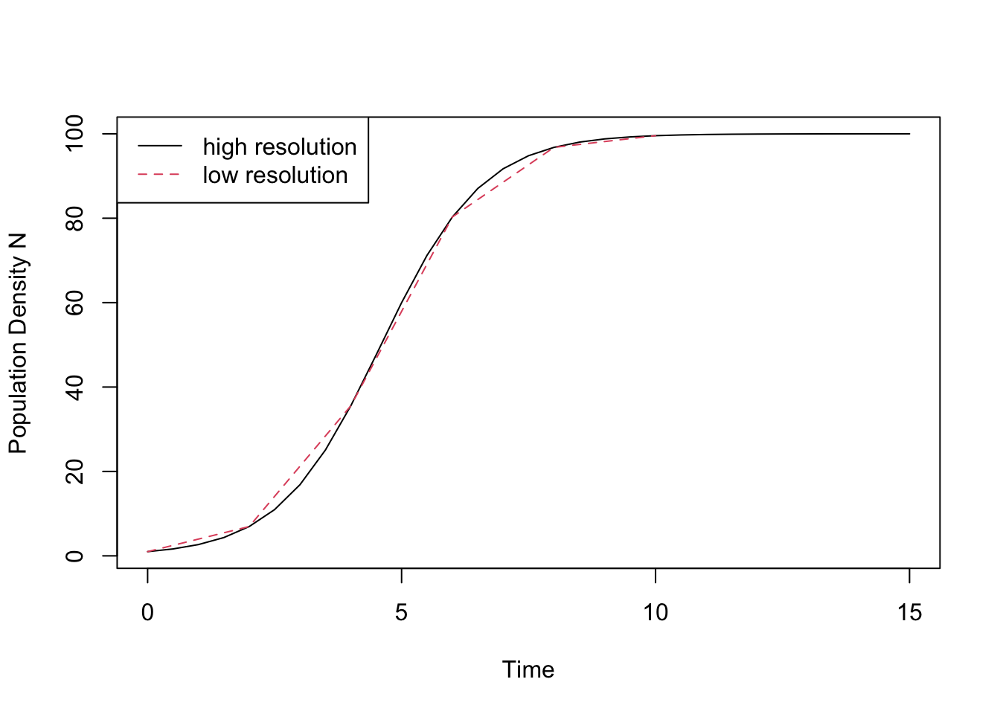
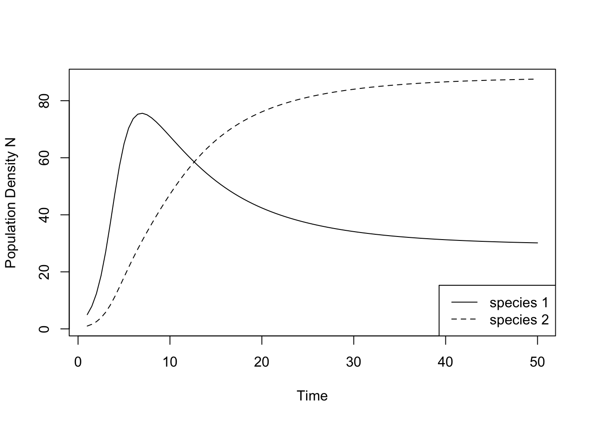
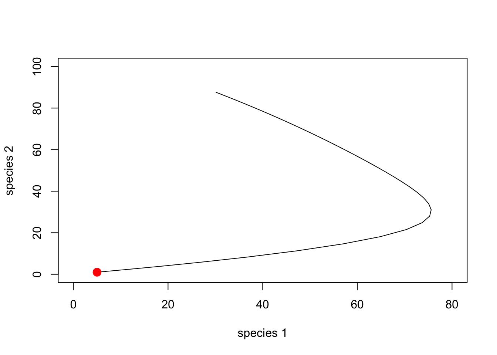

Almost all ecological models formulated as ordinary differential equations (ODEs) cannot be solved explicitly. That is to say, no explicit formula can be derived that gives population size as a function of time (logistic growth is a notable exception, see below). However, ODE models can in general very easily be analyzed in R with a method called numerical integration. What does that mean?
The easiest method is called the Euler method and works as follows. Let us consider the ordinary differential equation
\[ \frac{\mathrm{d}x}{\mathrm{d}t} = f(x(t)), \]
where \(x\) could stand for population size and \(f\) is a function describing the rate of change. From any starting population size \(x_0\), we can find an approximation of the value of \(x\) a short time \(\Delta t\) later through the finite time difference equation
\[ \frac{\mathrm{d}x}{\mathrm{d}t} \approx \frac{x(t + \Delta t) − x(t)}{\Delta t}, \] which can be rearranged as \[ x(t + \Delta t) \approx x(t) + \Delta t * \frac{\mathrm{d}x}{\mathrm{d}t}, \] or, using the the right-hand side of the differential equation, as \[ x(t + \Delta t) \approx x(t) + \Delta t * f(x(t)). \] In words, the value of the dynamic variable \(x\) a short time \(\Delta t\) later can be approximated by the current value \(x(t)\) plus the slope of the curve, given by \(f(x(t))\), multiplied by the length of the time interval \(\Delta t\). Thus, we locally approximate the function \(x(t)\) with its tangent line.
This formula is usually applied in the following way. We choose a step size \(\Delta t\), and then construct the sequence \(t_0,\, t_1 = t_0 + \Delta t,\, t_2 = t_0 + 2\Delta t,\, \ldots\). We denote by \(x_n\) a numerical estimate of the exact solution \(x(t_n)\), which are computed using the recursive scheme \[ x_{n+1} = x_n + \Delta t * f(x_n). \] The smaller the length of the time interval \(\Delta t\), the better the approximation, and \(\Delta t\) will indeed be an important parameter when solving ODEs in the next section. The Euler method is the easiest method to numerically solve an ordinary differential equation but far more accurate methods exist and are implemented in the package deSolve.
The R-package deSolve allows us to numerically solve ecological ODE models. A detailed documentation for this package and tutorials can be found here. Start by installing the package via the Install-tab in the bottom-right of your RStudio window and load it using
library(deSolve)As a first example, let us use the model for logistic growth in the \(r/\alpha\) formulation:
\[ \frac{\mathrm{d}N}{\mathrm{d}t}=N \left(r - \alpha N \right) \] This model has the stable equilibrium \(\hat N = r/\alpha\), often referred to as carrying capacity. In order to analyze an ODE, we need to do four things:
N0 <- c(N = 1)parameters <- c(r = 1, a = 0.01)time.steps <- seq(0, 10, 2) # this creates the vector (0, 2, 4, 6, 8, 10). Thus, here Delta t equals 1.log.growth <- function(time.steps, N0, parameters) {
with(as.list(c(N0, parameters)), {
dN.dt <- N * r*(1 - a * N)
return(list(dN.dt))
})
}Note that we here stored the parameters and initial conditions in a
named vector, which allows us to call their entries by their
name. The R-statement with
with(as.list(c(y, parms)), { } ensures that the state
variables and parameters can be addressed by their names.
Now we are ready to apply the deSolve-function
ode(y, times, func, parms, ...). This function has four
obligatory arguments, the initial values y, the vector of time
steps times, the name of the function that is going to be
solved func, and the vector of parameters parms. The
output is a data frame, with the first column being the time steps, and
the remaining being the state variables.
time.series <- ode(y = N0, times = time.steps, func = log.growth, parms = parameters)
time.series # let us have a look at the resulting data## time N
## 1 0 1.000000
## 2 2 6.945318
## 3 4 35.546104
## 4 6 80.295627
## 5 8 96.785647
## 6 10 99.552541plot(time.steps, time.series[, 2], type = "l", lty = 1:2, col=1, ylab = "Population Density N", xlab="Time")
This graph shows the solution of the ODE for logistic growth. We can make two observations. First, it seems that the dynamics might not have quite reached its equilibrium (given by \(\hat N = r/a = 1/0.01 = 100\)). We therefore should run the model a bit longer, in other words, increase the length of the time as specified in time.steps. Second, the graph of the time series does not look smooth but rather a bit choppy. This is due to the fact that we calculate the solution at only 6 different points, as determined by time.steps <- seq(1, 10, 2). Let us quadruple the number of time points at which the solution is calculated.
time.steps.2 <- seq(0, 15, 0.5) # this creates the vector (0, 0.5, 1.5, 2, 2.5, ..., 15). Thus, here Delta t equals 0.5.
time.series.2 <- ode(N0, time.steps.2, log.growth, parameters)
plot(time.steps.2, time.series.2[, 2], type = "l", lty = 1, col=1, ylab = "Population Density N", xlab="Time")
lines(time.steps, time.series[, 2], type = "l", lty = 2, col=2)
legend("topleft", legend = c("high resolution","low resolution"), col =c(1, 2), lty = c(1, 2))
And indeed, the new curve looks very smooth. For the logistic model it is in fact possible to compute the solution analytically,
\[ N(t) = \frac{N_0 \exp(r t)}{1 + \alpha r^{-1} N_0 (\exp(r t) - 1)}, \]
which we can define as an R-function and plot using the function curve:
solution_logistic <- function(t) { (N0 * exp(r * t)) /
(1 + (a * N0 / r) * (exp(r * t) - 1))
}
r <- 1
a <- 0.01
N0 <- 1
curve(solution_logistic(x), from = 0, to = 15, xlab = "time", ylab = "population size N")This graph is virtually indistinguishable from the one based on numerical integration.
Many ecological models describe the rate of change of more than one variable, such as a predator and its prey, or two competing species. The package deSolve can also solve such systems of coupled ordinary differential equations. As case in point, let us analyze the continuous time Lotka-Volterra competition model, which can be written as
\[ \frac{\mathrm{d}N_1}{\mathrm{d}t} = N_1 \left(r_1 - \alpha_{11} N_1 - \alpha_{21} N_2 \right)\\ \frac{\mathrm{d}N_2}{\mathrm{d}t} = N_2 \left(r_2 − \alpha_{22} N_2 - \alpha_{21} N_1 \right), \] where \(\alpha_{ij}\) describes the sensitivity of competition of species \(i\) to the presence of species \(i\).
To solve this system of equations numerically, we again start by specifying (i) the initial population sizes, (ii) the parameter values and (iii) the sequence of time steps for which to calculate population sizes.
N <- c(N1 = 5, N2 = 1) # vector of initial population sizes
r <- c(r1 = 1, r2 = 1) # vector of r-values
a <- c(a11 = 0.01, a12 = 0.008, a22 = 0.009, a21 = 0.007) # vector of sensitivities
parameters <- list(r, a) # all parameters collected in one list
time.steps <- seq(1, 50, 0.5) # sequence of times stepsNext, we specify the function with the two differential equations.
LV.comp <- function(time.steps, N, parameters) {
with(as.list(c(N, parameters)), {
dN1.dt <- N[1] * (r[1] - a[1] * N[1] - a[2] * N[2]) # here [i] indicates the ith position in the corresponding vector
dN2.dt <- N[2] * (r[2] - a[3] * N[2] - a[4] * N[1])
return(list(c(dN1.dt, dN2.dt)))
})
} Note that LV.comp assumes that N, r, a and K are vectors. For instance, the function extracts the first entry of r for the first species (r[1]). The vector N of population sizes contains one value for each population. To solve the population dynamics, we again use the function ode just as in the previous example.
time.series <- ode(y = N, times = time.steps, func = LV.comp, parms = parameters)
time.series[1:5, ] # shows the two densities for the first five time steps## time N1 N2
## [1,] 1.0 5.000000 1.000000
## [2,] 1.5 7.944503 1.603126
## [3,] 2.0 12.357817 2.528846
## [4,] 2.5 18.633562 3.895593
## [5,] 3.0 26.915081 5.807127matplot(time.steps, (time.series[, 2:3]), type = "l", lty = 1:2, col=1, ylab = "Population Density N", xlab="Time")
legend("bottomright", c("species 1", "species 2"), lty = 1:2)
For the above parameter values, the two competing species can coexist with each other. It seems that the sequence of time steps is both long enough and sufficiently fine grained for the solution to look smooth and reach its equilibrium.
Instead plotting these simulations as a time series, we can also plot them as a phase-plane diagram.
plot(time.series[, 2], time.series[, 3], xlim = c(0, 80), ylim = c(0, 100), type = "l", lty = 1, xlab = "species 1", ylab = "species 2")
points(N[1], N[2], cex = 1.5, pch = 19, col = "red") # adds a dot to show the starting densities